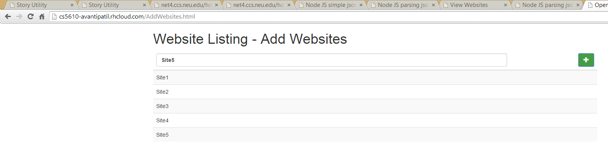

This link shows the output returned in json format
Click Here to see the Output

This Experiment is continuation of Experiment 28
JSON(JavaScript Object Notation) is the open standard format uses human readable text to transmit data object co
nsisting of attribute value pair. It will return ordered list of values . In other laguage you can say them as
lists , vectors , array or sequence .
From rest API JSON responce makes it easy in the receiving end to understand easily.
In this experiment I have added a functionalitty to add new data via JSON content in the Open Shift.
Description :
Above code snippet will post a json response to the server.
where the websites will add the new data using http post method.
The above code snippet shows that we can use website.push to add each website individually
For example : "Site5" is a added as a new key and pair
The above code shows that there is a dependancy of two modules that are
1. multer
used for parsing multipart/form-data
2. body-parser
used for for parsing application/json